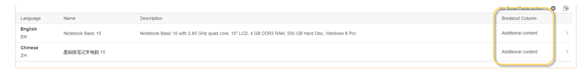

Example: Adding Columns to a Responsive Table on the Object Page
For responsive tables, you have to implement two extension points to add a custom
column.
Context
The table containing additional columns can look like this:

Custom columns in a responsive table on the object page
Procedure
Define a fragment for the view extension.
For a custom column in a responsive table, you have to implement two extensions. First,
implement the definition of the custom columns and then implement the
content of the custom columns.
In the example project:
webapp/ext/fragments/ProductTextResponsiveTableColumns.fragment.xml:
In the example project: ProductTextResponsiveTableCells.fragment.xml:
Register your view extensions in the manifest.json file of your application as
follows: